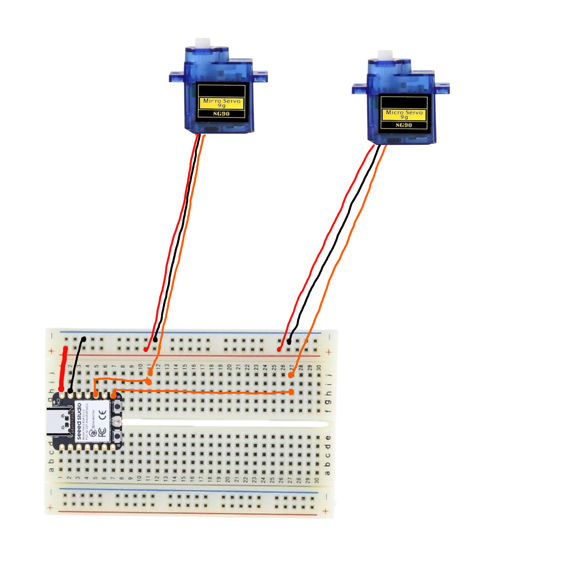
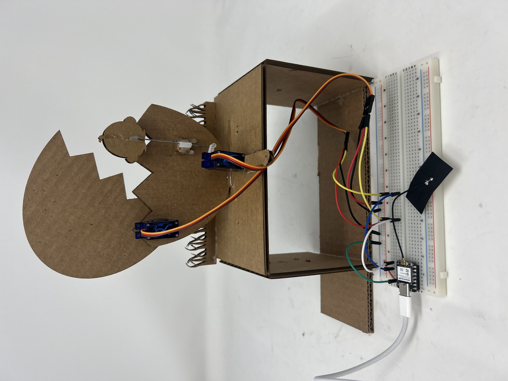

<div class="textcontainer">
<p class="margin"> </p>
<h3>Week 4: Microcontroller Programming</h3>
<br></div>
<h3> Updated Kinetic Sculpture</h3>
<h4>The previous week I made a kinetic sculpture using a crank shaft
that resulted in an erratic motion as a result of my decision to use a
flexible coupling to mitigate non-linear motion if my drive shaft.
</h4>
<br><br>
<h3><u>Crank-Shaft:</u></h3>
<video width="320" controls>
<source src="egg_demo.mp4" type="video/mp4">
Your browser does not support the video tag.
</video>
<br><br>
<br><br>
<h4><u>PROBLEM:</u> Egg and chicken have an unrefined, choppy motion,
that displays poor workmanship. </h4>
<h4><u>SOLUTION:</u> Redesign sculpture using servo motors for a smooth motion. </h4>
<br><br>
<br><br>
<h2><u>Step 1:</u><u>Egg Redesign (insert cool build music)</u></h2>
<h4>First I changed my cad design to insert a servo motor into the lower
egg half and attach the upper half to the rotating portion.
This removes the need for a joint between the two halfs and a lever arm for
the upper egg half. </h4>
<div style = "display: flex; justify-content: center; width: 100vw">
</div>
<h2><u>Step 2:</u><u>Programming</u></h2>
<h4>I made a circuit and programmed a microcontroller to create synchronous
sweeping motions for the egg and chicken.
</h4>
<p class="margin"> </p>
<div class="center-row">

<p id="aboutme">
Circuit controlling the servos.
</p>
</div>
<h4><u>Code:</u></h4>
<iframe src="https://app.arduino.cc/sketches/6bf80e5a-c1ac-4fae-a2fa-38a95fa33376?view-mode=embed" style="height: 750px;width:100%;margin:10px 0" frameborder=0></iframe>
<br><br>
<h2><u>Step 3:</u><u>Assembly and Alignment</u></h2>
<h4>I used a pivot and an aligning tube to transfer the chick servo sweep motion
to a liner motion and assembled the display.
</h4>
<div class="center-row">

<p id="aboutme">
</p>
</div>
</div>
<br><br>
<br><br>
<h3><u>Final Product!</u></h3>
<div style = "display: flex; justify-content: center; width: 100vw">
<video width="400" controls>
<source src="egg_front.mp4" type="video/mp4">
Your browser does not support the video tag.
</video>
<video width="400" controls>
<source src="egg_back.mp4" type="video/mp4">
Your browser does not support the video tag.
</video>
</div>
</div>